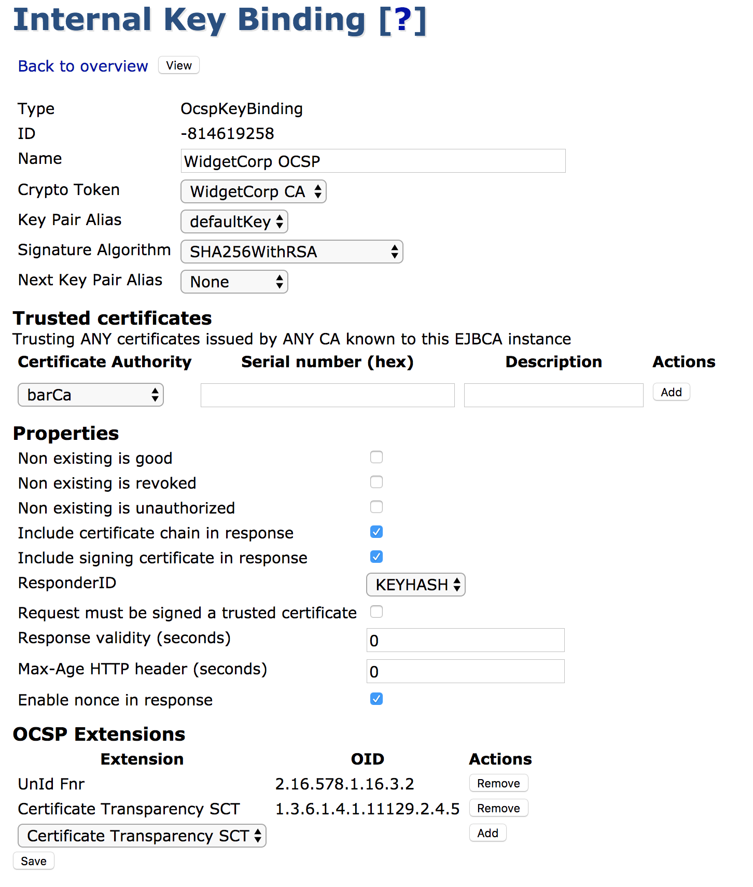

OCSP Management
For an in depth description of how EJBCA handles OCSP, see the OCSP Overview.
Examples:
This page covers all aspects of managing an OCSP Responder, whether situated locally on the same machine as the CA or remotely on a VA.
Building and Configuring the OCSP Responder
Using the UI on a Remote VA
The OCSP responder has the same UI as the CA, so you can manage all your Crypto Tokens and Key Bindings using the Admin GUI (or the CLI see below).
In an OCSP responder, you normally only use a few functions of the Admin GUI, although all of them are available. The important functions for an OCSP responder are:
Crypto Tokens
Internal Key Bindings
Prerequisites for Admin GUI access:
Available TLS keystores as p12/tomcat.jks and p12/truststore.jks (copies from the EJBCA CA), to be deployed with deploy-keystore and web-configure (may require configuration of keystore password in conf/web.properties).
An imported Management CA certificate (the certificate of the CA that issues administrator certificates).
Configured Administrators with access rules.
If you only want to set up a super administrator, the initial super administrator access rule is automatically set up during the initial startup (see database tables AdminGroupData and AccessRulesData). You can run the following commands to import a Management CA certificate and add a SuperAdmin, that has a certificate with "CN=SuperAdmin" issued from this CA (this will create a record in database table AdminEntityData).
bin/ejbca.sh ca importcacert ManagementCA /home/user/adminca1.pembin/ejbca.sh roles addmember "Super Administrator Role" ManagementCA WITH_COMMONNAME TYPE_EQUALCASE SuperAdminIf you do not want to import the administrator certificate into EJBCA, you can configure web.reqcertindb=false in conf/web.properties.
Otherwise the administrator certificate must be present in the database (can be imported using the CLI).
Setting up the OCSP Responder Keys
If working on a remote VA, make sure to import the CA that is meant to be the OCSP responder from the EJBCA CA.
The keys used to sign the OCSP response are referenced through Crypto Tokens (that could be either soft or HSM/PKCS#11 based). There should be one key for each CA, and one OCSP signing certificate must be issued from each CA the responder answers for.
The certificate profile could be the same for all issued OCSP signing certificates.
To issue an OCSP signer certificate from EJBCA, define a new certificate profile and clone the built-in certificate profile 'OCSPSIGNER'. This certificate profile is like a normal end entity profile, but with the following key usages:
- Key Usage: Digital Signature- Extended Key Usage: OCSPSignerConfigure the newly created certificate profile to use the OCSP publisher defined above. You also need to create a new End Entity Profile to use the new Certificate Profile. You should then create a user for each CA using this certificate profile. Use the token type User generated.
The OCSP responders certificate(s) AND the CA certificate(s) need to be published from the CA to the OCSP responder. For the CA you do this by setting the CRL publisher to the OCSP publisher.
Populating the OCSP Database on a Remote VA
By design, a standalone VA is designed to be stateful as a connection to the CA can't be presumed, and such a connection can't be relied upon to be constant. For that reason the VA's database is populated with certificate information, allowing it to function independently of the CA. This can be done in several ways. While we strongly recommend using the EJBCA Peer Publisher as the most secure and easy way, we provide options for populating the VA from a CRL produced by a non-EJBCA CA, or producing your own custom publisher and writing straight to the EJBCA database as well.
Using a Publisher on the CA
We currently provide two publishers, the EJBCA Peer Publisher which publishes certificates synchronously over TLS and the Legacy VA Publisher which uses direct database publishing.
Using the EJBCA Peer Publisher
ENTERPRISE This is an EJBCA Enterprise feature.
Follow the steps to set up a new OCSP Signer using an EJBCA Peer System:
These instructions assume that there already is a Peer System connecting the CA and the VA machines, that the connection is already tested and that there is already a remote identity representing the CA among the "Incoming Connections" in the VA's Peer Systems. For information on setting up Peer Systems, see Peer Systems.
Go to AdminGUI of OCSP > Crypto Tokens and create a new Crypto Token (unless you want to reuse an existing).
Go to AdminGUI of OCSP > Crypto Tokens > Your created Crypto Token and generate a new key pair.
Go to AdminGUI of OCSP > Internal Key Bindings > OcspKeyBindings tab and create a new OcspKeyBinding that references the Crypto Token and key pair.
Go to AdminGUI of OCSP > Peer Systems > Click on Modify Role for the peer connector representing the CA and set access rules for the newly created OcspKeyBinding ("view only" or "Renew certificate").
Go to AdminGUI of CA > Add End Entity, create an End Entity for issuing the OCSP signing certificate (use an OCSP Signer certificate profile).
Go to AdminGUI of CA > Peer Systems > Click Manage for the peer connector representing the VA > Remote Key Bindings, fill in the credentials for the OCSP signing End Entity in the newly created OcspKeyBinding and click Issue Signing Certificate.
Go to Admin GUI of OCSP > Internal Key Binding > OcspKeyBindings tab and verify that the OCSP key binding have a certificate and has been activated.
Using the Legacy VA Publisher
ENTERPRISE This is an EJBCA Enterprise feature.
Follow the steps to set up a new OCSP Signer using a VA Publisher:
Go to AdminGUI of OCSP > Crypto Tokens and create a new Crypto Token (unless you want to reuse an existing).
Go to AdminGUI of OCSP > Crypto Tokens > Your created Crypto Token and generate a new key pair.
Go to AdminGUI of OCSP > Internal Key Bindings > OcspKeyBindings tab and create a new OcspKeyBinding the references the Crypto Token and key pair.
Go to AdminGUI of OCSP > Internal Key Bindings and create a Certificate Signing Request for your new OcspKeyBinding. Save this file.
Go to PublicWeb of CA > Create Certificate from CSR > Use the credentials for issuing an OCSP signing certificate and upload the CSR.
...(CA publishes new OCSP signing certificate to OCSP instance)...
Go to AdminGUI of OCSP > Internal Key Bindings and click Update for your new OcspKeyBinding. This will find the published certificate by matching the key pair with the certificate.
Go to AdminGUI of OCSP > Internal Key Bindings and click Enable for your new OcspKeyBinding to start processing OCSP responses with it.
Using the CRL Download Service
To configure a Service that automatically downloads and populates the mentioned fields from a CRL, do the following:
Select Admin GUI > Certification Authorities > Import CA certificate for the CA that you want to serve OCSP responses for.
Select Admin GUI > Certification Authorities > Edit CA for the imported CA > Configure an external CDP where the CA makes its CRLs available (must begin with "http://").
Select Admin GUI > Services and Add a new Service "CRLDownloadService".
Select Admin GUI > Services and Edit "CRLDownloadService":
Select Worker: CRL Downloader.
CAs to Check: Select the imported CA (or select ANY to process all external X509 CAs with a configured external CDP).
Ignore nextUpdate and always download the CRL: Select this option to force a download of the CRL whenever the service is executed instead of only downloading the CRL when the last known CRL indicates that a new one will be available.
Maximum allowed size to download (bytes): The Service will refuse to process CRLs that are larger than this limit.
Period: How often the Service should check if a new CRL needs to be downloaded.
Active: Select to activate the service.
The next time the service is executed, there will be log entries showing if the CRL download and processing was successful. After the first execution of the service you should be able to download the CRL from the VA's Public Web pages.
Next, setup an OcspKeyBinding as described for the case where direct database publishing is used. The only difference is that there is no way for the VA to know if a certificate has ever been issued, so it makes sense to respond OCSP status "good" for unknown certificates.
If the downloaded CRL from the external CDP contains the Freshest CRL extension, the service will try to download and process any such URL that uses "http" as protocol.
Using a Custom Implementation
When running the OCSP responder answering queries from CAs in an EJBCA installation, populate the database using the External OCSP Publisher. For more information, see Building and Configuring the OCSP Responder.
When using other CA software than EJBCA you can populate the database based on data from that system. The only thing needed is to insert data in the CertificateData table on the external OCSP responder.
The values used by the OCSP responder are:
|
Field |
Description |
|
issuerDN |
Must be of "EJBCA normalized" form, as returned by org.cesecore.util.CertTools.getIssuerDN(cert). |
|
serialNumber |
Is BigInteger.toString(). |
|
status |
Is from CertificateDataBean.CERT_REVOKED etc. |
|
revocationDate |
Date (in milliseconds since epoch) that the certificate was revoked on. Or 0 by default if not revoked. |
|
revocationReason |
Revocation reason. If from RevokedCertInfo.NOT_REVOKED etc. |
|
certificateProfileId |
Used if you configure things like ocsp.999.untilNextUpdate in ocsp.properties. |
|
expireDate |
Date (in milliseconds since epoch) that the certificate expires. Used to control when ArchiveCutoff (RFC6960 4.4.4) is included. |
CA certificates and OCSP signer certificates must also be in the database. For these certificates the fingerprint, subjectDN, and base64Cert fields must also be included.
Setting the Default Responder
The default responder is the valid CA or OCSP Keybinding set to sign responses to requests that come in for unknown issuers.
For all unknown issuers the default responder will reply with an 'UNKNOWN' response. For external CAs without dedicated OCSP keybindings the default responder will perform standard OCSP lookups. Be aware that this may cause unexpected behavior in the case of where an inactivated (due to responder certificate being revoked or expiring) keybinding exists, and that keybinding has a different behavior in regards to unknown certificates than the default responder.
If no default responder is defined, is defined incorrectly, or the chosen responder doesn't have a certificate, the responder will reply "Unauthorized" (as per RFC2560) with a null payload.
Setting the Default Responder from the GUI
You can choose the default responder from the list menu in the OCSP Internal Keybindings page in the GUI, which will show all valid CAs and keybindings. It will also provide the option to choose none and allow retaining an old but unmatched value imported via migration from configurations earlier than version 6.2.4
Setting the Default Responder from the CLI
The default responder can also be chosen from the CLI with the following command.
bin/ejbca.sh ocsp setdefaultresponder <DN>To see a list of valid responders, run the command with the --help switch. This will also show the current chosen responder.
Setting Responder ID Type for CAs
Local CA's will automatically answer OCSP responses for themselves, unless an OCSP Keybinding has been set up for them. This setting defines the general responder ID type for CA's acting as their own responders. Just like for an OCSP Keybinding, the responder ID type is either a Name (SubjectDN of the signing certificate used for response) or Keyhash (SHA-1 digest of the public key of the signing certificate used for response).
Checking the Status of the OCSP Responder using the EJBCA Client Toolbox
Verification of a running responder can be done using the EJBCA Client Toolbox.
To list all available OCSP commands, run the following:
$TOOLBOX_HOME/ejbcaClientToolBox.sh OCSPConfiguring OCSP Extensions
The standard allows using extensions in OCSP requests and responses.
OCSP extensions can be configured individually per OCSP Keybinding in the UI, according to the following example:

Nonce
Nonce is the only standard extension defined. The nonce allows a client to verify that a response really is in response to the specific requests, and not a replayed response. It is recommended that if the OCSP requests contains the nonce extension, the OCSP response also contains the nonce. EJBCA includes the nonce from the client requests in the server response if the requests contain a nonce. The OCSP nonce extension can be disabled both per OCSP Keybinding, and also globally for all CAs acting as their own OCSP responders. Disabling nonces globally will not affect whether OCSP keybindings use the nonce extension in their responses.
Fnr-Unid Mapping Extension
For information on the Unid functionality, see Unid FNR.
CertHash OCSP Extension
For information on the CertHash functionality, see CertificateHash.
Using HTTP GET and RFC5019
For HTTP get requests according to RFC5019 we can set HTTP headers in the response to allow caching proxies to cache responses. By default, these properties are set not to allow caching, which is the default behavior.
To enable caching in HTTP proxies you can tune a few properties in conf/ocsp.properties or in the an OcspKeyBinding.
ocsp.untilNextUpdate: Number of seconds a response will be valid. This sets the nextUpdate field in the OCSP response.
ocsp.maxAge: How long a response will be cached, in seconds. Should be less than untilNextUpdate. This adds RFC5019 cache headers.
You can also specify different nextUpdate values depending on which certificate profiles the certificate was issued by. This only works when you have published the certificate information using EJBCA 3.9.0 or later, where the certificateProfileId column in the CertificateData table is populated. You can find the certificateProfileId in the Admin GUI.
ocsp.<certificateProfileId>.untilNextUpdate: Number of seconds a response will be valid for certificates issued with the specified certificate profile.
ocsp.<certificateProfileId>.maxAge: How long a response will be cached for certificates issued with the specified certificate profile. Should be less than untilNextUpdate.
If no specific certificateProfileId is specified, the default values from ocsp.maxAge and ocsp.untilNextUpdate are used. Properties from an OcspKeyBinding will override the defaults, but never certificateProfileId specific settings.
However, in case of certificate status unknown, EJBCA attempts to avoid the caching of an OSCP GET response by setting the HTTP header "Cache-Control" to "no-cache, must-revalidate" (non-configurable).
OCSP Stress Testing
You can stress test your CAs and OCSP responders using the EJBCA Client Toolbox.
To stress test, issue a large number of certificates from the CA using the web-service stress test, and then stress test the OCSP responder with a random selection of all the certificates issued.
$TOOLBOX_HOME/ejbcaClientToolBox.sh EjbcaWsRaCli stress ...$TOOLBOX_HOME/ejbcaClientToolBox.sh OCSP stress ...Monitoring OCSP Databases
EJBCA Database CLI contains a standalone tool for monitoring OCSP databases. The tool is based on Java SE JPA and can be configured in:
dist/ejbca-db-cli/META-INF/persistence.xml.Log4J is used for reporting and can be configured in:
dist/ejbca-db-cli/log4j.xml.Once built, run the command with:
./run.sh ocspmonThe tool operates using Certificate Profile IDs that are the internal representations of different Certificate Profiles in EJBCA. When running the tool, it outputs all the existing IDs in each OCSP. These IDs are also shown in the Admin GUI for each CertificateProfile.
The following inconsistencies are detected:
Missing information about certificates in the OCSP database. (ERROR)
Additional information about certificates in the OCSP database. (ERROR)
Information about certificates in the OCSP database that has been tampered with. (ERROR)
If there are any extra certificates profiles in use on the OCSP besides those being checked. (WARN)
Every detected inconsistency will also be reported in a summarizing final ERROR message and if there are too many errors, this final message will be truncated.
Instead of going through every single CertificateData row in a database, it is recommended to use indexes like the following example for both the CA database and each OCSP responder:
create index certificatedata_idx7 on CertificateData(certificateProfileId);Signature Token Activation (Upgrades only)
If you are upgrading from an earlier EJBCA 5.0.x version, the activation password is required for migrating the OCSP signing key-stores. When activating you are prompted for a password and this password will then be used for all token password not configured.
To activate:
$TOOLBOX_HOME/ejbcaClientToolBox.sh OCSPActivateAfter migrating the key-stores and certificates to Crypto Tokens and OcspKeyBindings, you must use the EJB CLI for activating your Crypto Tokens.